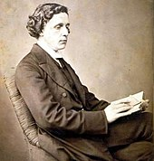

Charles Lutwidge Dodgson was born 27 January 1832 and died 14 January 1898.
Dodgson was better known by his pen name Lewis Carroll, and was an English
writer of world-famous children's fiction, such as Alice's Adventures in Wonderland
and its sequel Through the Looking-Glass. He was noted for his facility at
word play, logic, and fantasy. The poems Jabberwocky and The Hunting of the
Snark are classified in the genre of literary nonsense. He was also a mathematician,
photographer, and Anglican deacon.
Source

Click here to go back